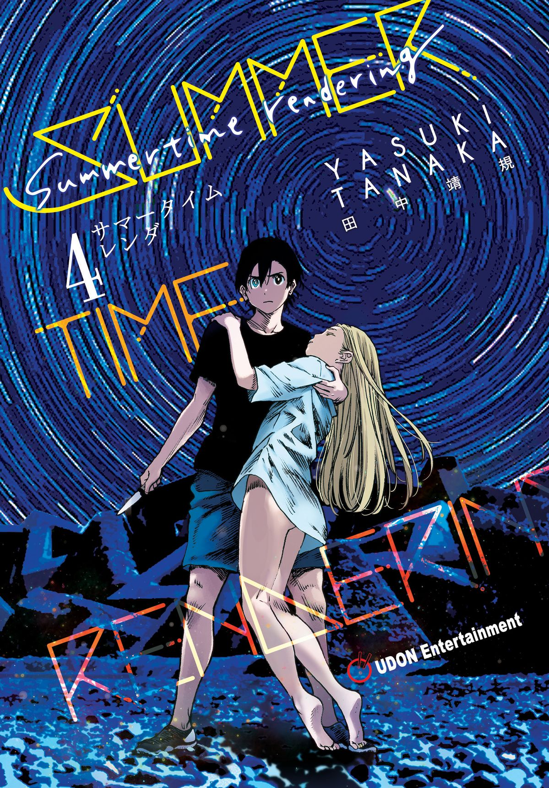
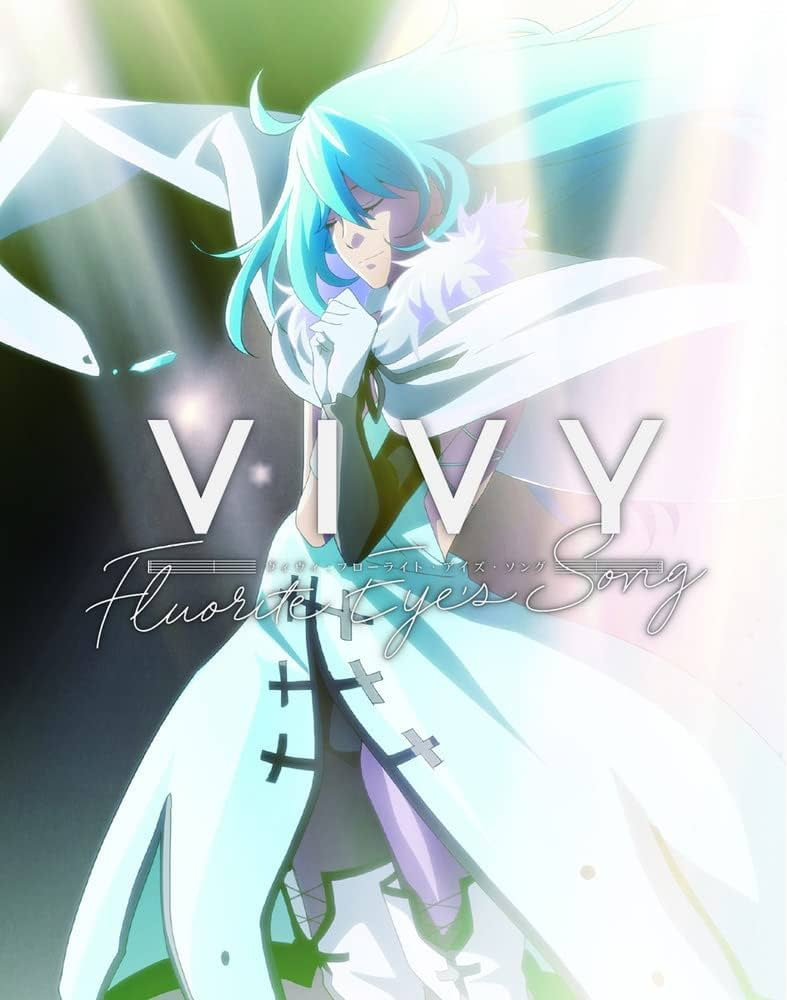
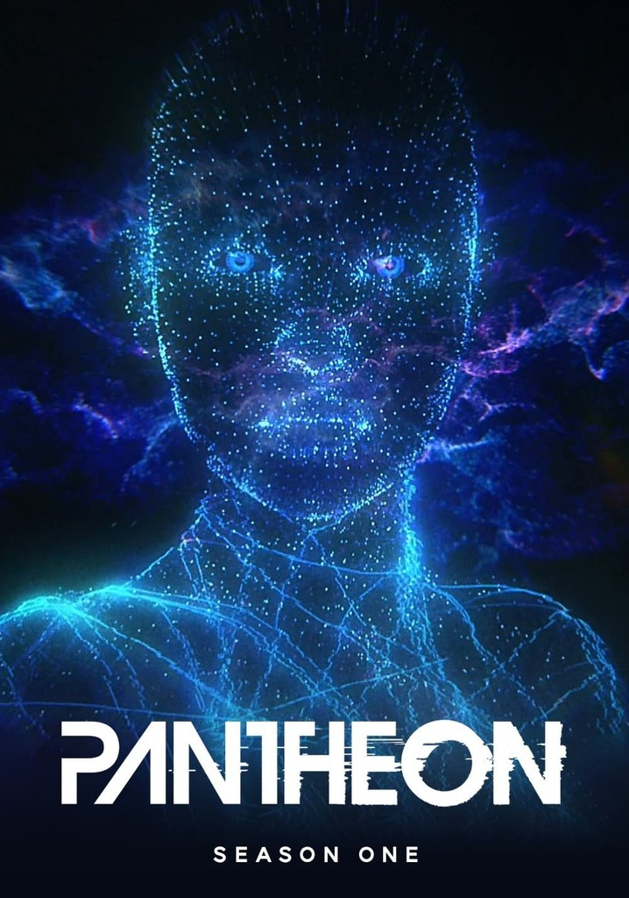

Una historia veraniega de ciencia ficción llena de suspenso y ambientada en una pequeña isla, comienza con Shinpei Ajiro, cuyo amigo de la infancia Ushio Kofune murió. Él regresa a su ciudad natal por primera vez en dos años para el funeral. Sou Hishigata, su mejor amigo, sospecha que algo anda mal con la muerte de Ushio y que alguien más puede morir a continuación. Se escucha un presagio siniestro cuando toda la familia de al lado desaparece repentinamente al día siguiente. Además, Mio recuerda haber visto una "sombra" tres días antes de la muerte de Ushio.

Vivy es una IA que trata de hacer a todos felices con su canto mientras recibe una visita sorpresa. Este visitante inesperado la involucrará en eventos de gran repercusión en el futuro del mundo. Los problemas están por comenzar y necesitan la ayuda de Vivy.

Dos adolescentes atribulados descubren sus conexiones personales con una nueva tecnología que funciona a expensas de los humanos,Maddie es una adolescente que sufre acoso, recibe ayuda online de un desconocido, que resulta ser David, su padre, ya fallecido. Su mente ha subido a la nube tras un escáner cerebral experimental. Y él no es el único….
